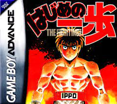
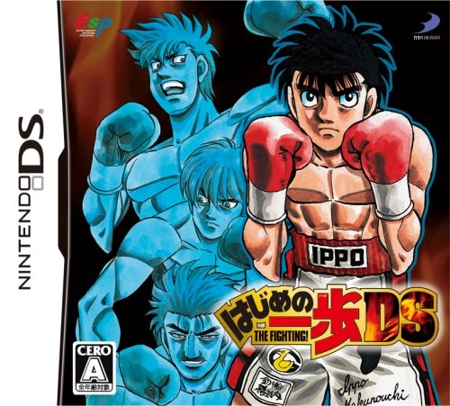
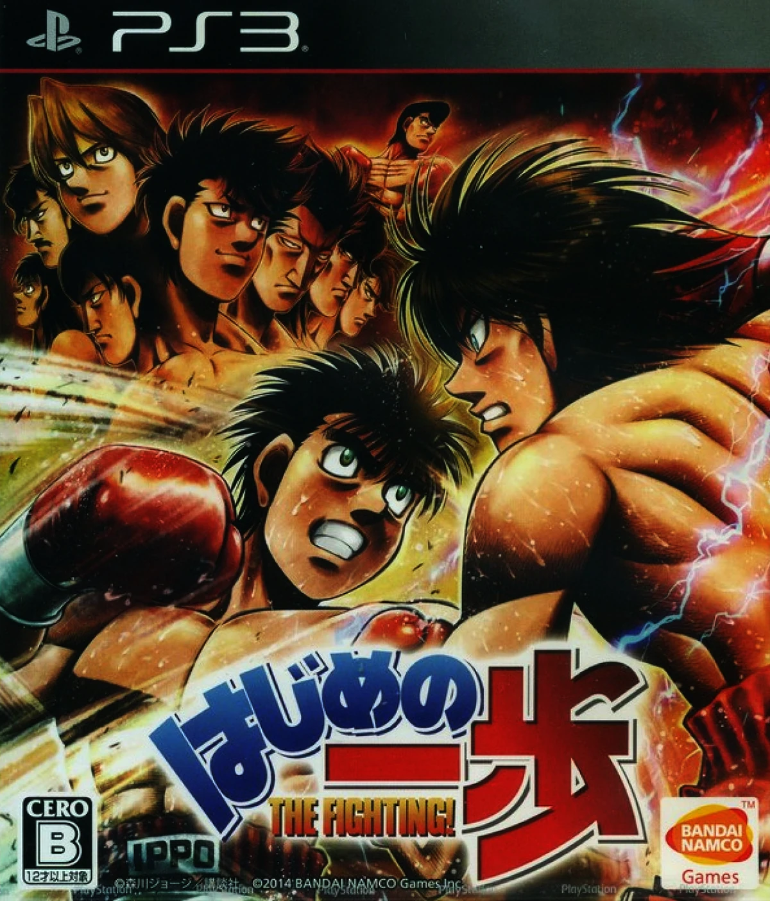

Hajime no Ippo (GBA)
- Formato: Game Boy Advance
- Fecha de lanzamiento: 13 de diciembre del 2002
- Número de jugadores: 2


Hajime no Ippo DS
- Formato: Nintendo DS
- Fecha de lanzamiento: 4 de diciembre del 2008
- Número de jugadores: 2
Hajime no Ippo (PS3)
- Formato: Play Station 3
- Fecha de lanzamiento: 11 de diciembre del 2014
- Número de jugadores: 2
